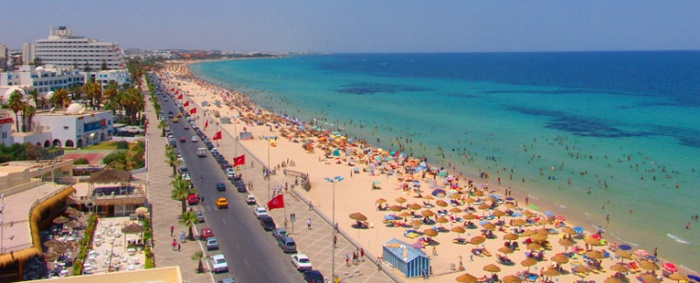
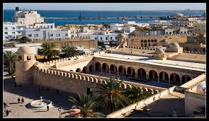
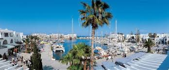

Sousse est une ville portuaire de l'est de la Tunisie, située à 143 kilomètres au sud de Tunis, et ouverte sur le golfe d'Hammamet (mer Méditerranée).
« Capitale » du Sahel tunisien — elle est parfois surnommée la « perle du Sahel » — et chef-lieu du gouvernorat du même nom, la population de sa municipalité atteint 221 530 habitants en 20141 alors que son agglomération avoisine les 500 000 habitants, ce qui fait d'elle la troisième agglomération du pays après Tunis et Sfax. La médina de Sousse est inscrite au patrimoine mondial de l'Unesco depuis 1988.

La Grande Mosquée de Sousse
La Grande Mosquée de Sousse (الجامع الكبير بسوسة) est la principale mosquée de la ville tunisienne de Sousse.
Située à l'entrée de la médina, elle est érigée par le souverain aghlabide Aboul Abbas Ier (841-856) en 850-851, soit près de trente ans après la construction du ribat de Sousse. Cette mosquée est emblématique d'une cité devenue quelques années après le règne de Ziadet-Allah Ier (817-838), la seconde ville de l'Ifriqiya et du Sahel. Par la suite, l'édifice est agrandi sous le règne d'Ibrahim II (875-902)2.

Port El-Kantaoui (مرسى القنطاوي) est une marina qui est devenue l'une des plus importantes stations balnéaires de la Tunisie.
